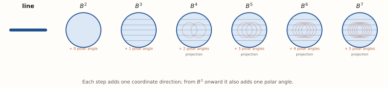
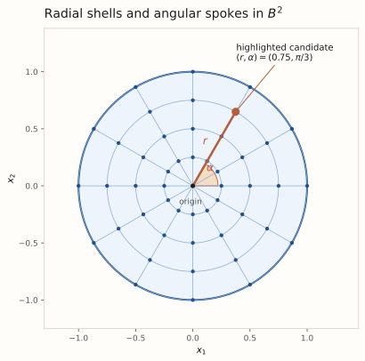
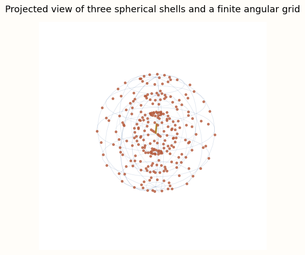
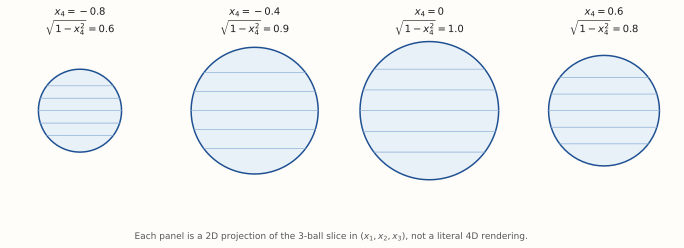
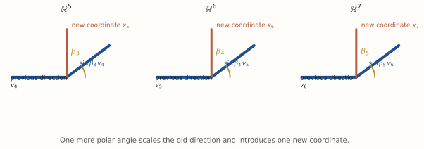
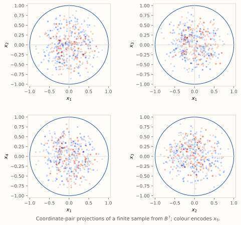
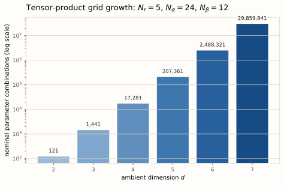
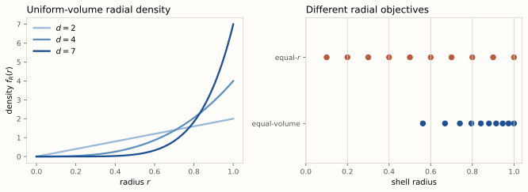
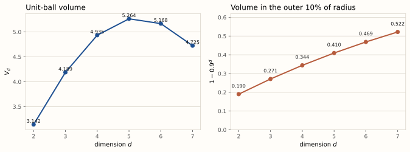

Radial shells, hyperspherical coordinates, and discrete design spaces
A Euclidean ball contains infinitely many candidate points. Numerical design and optimization replace that continuum with a finite, indexed set: choose radii, choose angles, convert every parameter tuple to Cartesian coordinates, and evaluate the resulting candidates. The construction is elementary; its growth from two to seven dimensions is not.

The unit ball and its boundary are different objects:
$B^2$ is the filled disk and $S^1$ is its circle. $B^3$ is the ordinary solid ball and $S^2$ is the usual sphere. $B^4$ is the four-dimensional ball with boundary $S^3$, and the pattern continues through $B^7$ with boundary $S^6$. Thus “sphere” refers to the boundary here, not to the filled region.
| Dimension | Ball | Boundary | Polar-type angles |
|---|---|---|---|
| 2 | $B^2$ | $S^1$ | 0 |
| 3 | $B^3$ | $S^2$ | 1 |
| 4 | $B^4$ | $S^3$ | 2 |
| 5 | $B^5$ | $S^4$ | 3 |
| 6 | $B^6$ | $S^5$ | 4 |
| 7 | $B^7$ | $S^6$ | 5 |
There is always one azimuth $\alpha$ and $d-2$ polar angles $\beta_1,\ldots,\beta_{d-2}$. Each new coordinate direction therefore introduces one further polar angle.
Use radius $r$, azimuth $\alpha$, and polar angles $\beta_1,\ldots,\beta_{d-2}$, with
The construction can be stated recursively. Start on the unit circle in $\mathbb{R}^2$, then wrap the preceding direction into one more coordinate at every step:
A candidate in the filled disk has radius $r$ and azimuth $\alpha$. Selecting $0 Discretization variables: $r_i$, $i=1,\ldots,N_r$, and $\alpha_j$, $j=0,\ldots,N_\alpha-1$. There are no polar angles in two dimensions.  The translucent regions are $B^2(r_i)$; their circular edges are $S^1(r_i)$. Build mode adds one filled disk at a time from the shared origin outward.Discretizing the disk with nested concentric sub-balls
In the ordinary solid ball, $\alpha$ still turns around the $x_3$ axis. The added angle $\beta_1$ is a polar inclination: it is $0$ on the positive $x_3$ axis and $\pi$ on the negative axis. Selecting several radii produces nested filled balls $B^3(r_i)$; their visible spherical boundaries are $S^2(r_i)$.
Discretization variables: $r_i$, $\alpha_j$, and $\beta_{1,k}$. The finite directional grid lies on selected boundaries $S^2(r_i)$, while the translucent regions represent the enclosed balls $B^3(r_i)$.

Each tinted volume is $B^3(r_i)=\{x:x_1^2+x_2^2+x_3^2\leq r_i^2\}$, enclosed by its thin boundary $S^2(r_i)$. Drag to inspect; build mode introduces filled balls and their boundaries together.
At x3 = 0, each B³(ri) cuts a disk of radius ri.
$B^4$ uses a second polar angle $\beta_2$. A useful representation fixes the fourth coordinate. At $x_4=c$, the remaining coordinates satisfy
so the slice is a three-dimensional ball of radius $\sqrt{1-x_4^2}$. For example, fixing $x_4=0.6$ leaves a 3-ball of radius $\sqrt{1-0.6^2}=0.8$.
Discretization variables: $r_i$, $\alpha_j$, $\beta_{1,k}$, and $\beta_{2,\ell}$. The static panels are 2D projections of the corresponding 3-ball slices in $(x_1,x_2,x_3)$.

The circle changes only as a 2D projection of the actual 3D slice. Its displayed radius is the exact 3-ball radius $\sqrt{1-x_4^2}$.
The angle $\beta_3$ controls the new $x_5$ coordinate while scaling the entire four-dimensional direction. A concrete view is obtained by fixing or colour-encoding $x_5$ and projecting a coordinate pair from the remaining variables.
Discretization variables: $r_i$, $\alpha_j$, and $\beta_{1,k},\beta_{2,\ell},\beta_{3,m}$. The added angle is not a decorative parameter: every choice changes both $x_5$ and the scale inherited by $x_1$ through $x_4$.

For $B^6$, a coordinate-pair projection such as $(x_1,x_3)$ records two components of each candidate while deliberately discarding the others. It is a faithful projection of a finite point set, not an attempted rendering of a six-dimensional object.
Discretization variables: $r_i$, $\alpha_j$, and $\beta_{1,k},\beta_{2,\ell},\beta_{3,m},\beta_{4,n}$. Four polar grids are now multiplied together.
At seven dimensions, coordinate-pair views are especially useful. Different panels below show the same sampled candidates in $(x_1,x_2)$, $(x_1,x_3)$, $(x_1,x_4)$, and $(x_2,x_3)$; colour records $x_5$. No panel represents $B^7$ literally.
Discretization variables: $r_i$, $\alpha_j$, and five polar-angle grids $\beta_1$ through $\beta_5$.

Place the origin separately and choose positive radial shells, equally spaced azimuths, and simple polar grids:
Here $N_{\beta_q}\geq2$. The straightforward tensor-product parameter-combination count is
This is nominal, not necessarily the number of distinct Cartesian points. At a polar endpoint, a sine factor vanishes. In $\mathbb{R}^3$, for example, $\beta_1=0$ gives $(0,0,r)$ for every azimuth $\alpha$.
Coordinate degeneracy at a pole. Many different azimuth indices represent the same Cartesian point. A practical implementation may deduplicate points, but the nominal combination count remains useful for understanding the cost of a direct tensor grid.
For a common $N_\beta$, the nominal count is $1+N_rN_\alpha N_\beta^{d-2}$. The bars use a logarithmic visual scale so small and large dimensions remain visible together.

An angular tensor grid is easy to construct and index, but it is not an equal-area design. On an ordinary sphere, longitude lines converge at the poles. Equal azimuth increments therefore produce much denser surface points near the poles than near the equator. The same Jacobian effect persists in hyperspherical coordinates.
Uniform radius spacing has a different meaning from uniform volume. For a point uniformly distributed in the unit $d$-ball,
The last expression gives a convenient uniform-volume radial draw. It places more shell radii near one as dimension rises. Neither choice is universally superior: optimal design may seek candidate or support points informative for a model, rather than a sample uniform in physical volume.

The unit-ball volume and boundary measure are
| $d$ | Ball | Boundary | Polar angles | $V_d$ | $A_{d-1}$ |
|---|---|---|---|---|---|
| 2 | $B^2$ | $S^1$ | 0 | $\pi\approx3.1416$ | $2\pi\approx6.2832$ |
| 3 | $B^3$ | $S^2$ | 1 | $4\pi/3\approx4.1888$ | $4\pi\approx12.5664$ |
| 4 | $B^4$ | $S^3$ | 2 | $\pi^2/2\approx4.9348$ | $2\pi^2\approx19.7392$ |
| 5 | $B^5$ | $S^4$ | 3 | $8\pi^2/15\approx5.2638$ | $8\pi^2/3\approx26.3189$ |
| 6 | $B^6$ | $S^5$ | 4 | $\pi^3/6\approx5.1677$ | $\pi^3\approx31.0063$ |
| 7 | $B^7$ | $S^6$ | 5 | $16\pi^3/105\approx4.7248$ | $16\pi^3/15\approx33.0734$ |

For a uniform point in $B^d$, the probability that its radius lies in the outer band of width $\varepsilon$ is
With $\varepsilon=0.1$, this is $0.190$ for $d=2$, $0.271$ for $d=3$, $0.344$ for $d=4$, $0.410$ for $d=5$, $0.469$ for $d=6$, and $0.522$ for $d=7$. A larger portion of uniform volume consequently lies in the outer 10% of the radial coordinate as $d$ grows. This directly affects how a finite radial construction represents interior and boundary regions.
The candidate grid is only one source of computational growth. In polynomial regression of total degree $k$ in $d$ variables, the number of monomial regression terms is
The information matrix is therefore $p\times p$. A-optimality and D-optimality are examples of criteria evaluated from that matrix. In a direct search, increasing dimension can enlarge both the candidate design space and the matrix on which the criterion operates.
| Dimension $d$ | $k=2$ | $k=3$ | $k=4$ | $k=5$ |
|---|---|---|---|---|
| 2 | $6\times6$ | $10\times10$ | $15\times15$ | $21\times21$ |
| 3 | $10\times10$ | $20\times20$ | $35\times35$ | $56\times56$ |
| 4 | $15\times15$ | $35\times35$ | $70\times70$ | $126\times126$ |
| 5 | $21\times21$ | $56\times56$ | $126\times126$ | $252\times252$ |
| 6 | $28\times28$ | $84\times84$ | $210\times210$ | $462\times462$ |
| 7 | $36\times36$ | $120\times120$ | $330\times330$ | $792\times792$ |
Stereographic projection concerns the boundary sphere $S^{d-1}=\{x\in\mathbb{R}^d:x_1^2+\cdots+x_d^2=1\}$, not the filled ball. Remove $N=(0,\ldots,0,1)$ and project a point $x=(x_1,\ldots,x_d)\ne N$ onto the equatorial plane $x_d=0$.
The target lies where the last coordinate vanishes. Thus $1+t(x_d-1)=0$, so $t=1/(1-x_d)$. Every retained coordinate is scaled by that same line-intersection factor:
Writing $\rho^2=\sum_{i=1}^{d-1}(x_i^*)^2$, the inverse is
Indeed, substituting gives $\sum_{i=1}^{d-1}x_i^2+x_d^2=4\rho^2/(1+\rho^2)^2+(\rho^2-1)^2/(1+\rho^2)^2=1$.
Move $P$ toward the north pole. Its projected point $Y$ runs far out in the equatorial plane because the denominator $1-x_3$ approaches zero.
For $x=(x_1,x_2,x_3,x_4,x_5,x_6,x_7)\in S^6\subset\mathbb{R}^7$ and $N=(0,0,0,0,0,0,1)$,
Conversely, with $\rho^2=(x_1^*)^2+\cdots+(x_6^*)^2$, each $x_i=2x_i^*/(1+\rho^2)$ for $i=1,\ldots,6$, and $x_7=(\rho^2-1)/(\rho^2+1)$.
| Ambient space | Source sphere | Removed coordinate | Explicit target map |
|---|---|---|---|
| $\mathbb{R}^7$ | $S^6$ | $x_7$ | $(x_1/(1-x_7),\ldots,x_6/(1-x_7))\in\mathbb{R}^6$ |
| $\mathbb{R}^6$ | $S^5$ | $x_6$ | $(x_1/(1-x_6),\ldots,x_5/(1-x_6))\in\mathbb{R}^5$ |
| $\mathbb{R}^5$ | $S^4$ | $x_5$ | $(x_1/(1-x_5),\ldots,x_4/(1-x_5))\in\mathbb{R}^4$ |
| $\mathbb{R}^4$ | $S^3$ | $x_4$ | $(x_1/(1-x_4),x_2/(1-x_4),x_3/(1-x_4))\in\mathbb{R}^3$ |
| $\mathbb{R}^3$ | $S^2$ | $x_3$ | $(x_1/(1-x_3),x_2/(1-x_3))\in\mathbb{R}^2$ |
This is $\sigma_4(x_1,x_2,x_3,x_4)=(x_1^*,x_2^*,x_3^*)$. The rotating cloud is the full 3D target; the companion panel is only the screen projection $\pi_{12}(x^*)=(x_1^*,x_2^*)$, with $x_3^*$ encoded by colour. It is not a map from $\mathbb{R}^4$ to $\mathbb{R}^2$.
The deterministic sample lies on the selected source sphere. The panel is a 2D coordinate view $(y_1,y_2)$ of the full $\mathbb{R}^{d-1}$ stereographic coordinates; when available, colour encodes $y_3$.
Viewing $(y_1,y_2)$ from $\mathbb{R}^6$.
Loading coordinates.
Each row is the stereographic projection for the boundary sphere in that ambient dimension. The diagram does not represent repeated projection of one unchanged point through the cascade.
Stereographic projection offers a useful coordinate representation for a finite design on $S^{d-1}$. It is conformal, so it preserves angles locally, but it does not preserve distances and becomes unbounded near the excluded pole. Those properties matter when interpreting clustering after projection.
| $d$ | Ball / boundary | Coordinates required | Polar angles | Nominal grid count | $p(d,4)\times p(d,4)$ |
|---|---|---|---|---|---|
| 2 | $B^2/S^1$ | $r,\alpha$ | 0 | $1+N_rN_\alpha$ | $15\times15$ |
| 3 | $B^3/S^2$ | $r,\alpha,\beta_1$ | 1 | $1+N_rN_\alpha N_{\beta_1}$ | $35\times35$ |
| 4 | $B^4/S^3$ | $r,\alpha,\beta_1,\beta_2$ | 2 | $1+N_rN_\alpha N_{\beta_1}N_{\beta_2}$ | $70\times70$ |
| 5 | $B^5/S^4$ | $r,\alpha,\beta_1,\ldots,\beta_3$ | 3 | $1+N_rN_\alpha\prod_{q=1}^{3}N_{\beta_q}$ | $126\times126$ |
| 6 | $B^6/S^5$ | $r,\alpha,\beta_1,\ldots,\beta_4$ | 4 | $1+N_rN_\alpha\prod_{q=1}^{4}N_{\beta_q}$ | $210\times210$ |
| 7 | $B^7/S^6$ | $r,\alpha,\beta_1,\ldots,\beta_5$ | 5 | $1+N_rN_\alpha\prod_{q=1}^{5}N_{\beta_q}$ | $330\times330$ |
Radial-angular tensor grids are transparent baseline constructions. Their indexed structure is valuable, but their rapid growth, coordinate degeneracies, and nonuniform geometry make careful candidate-set construction central in numerical optimal design.